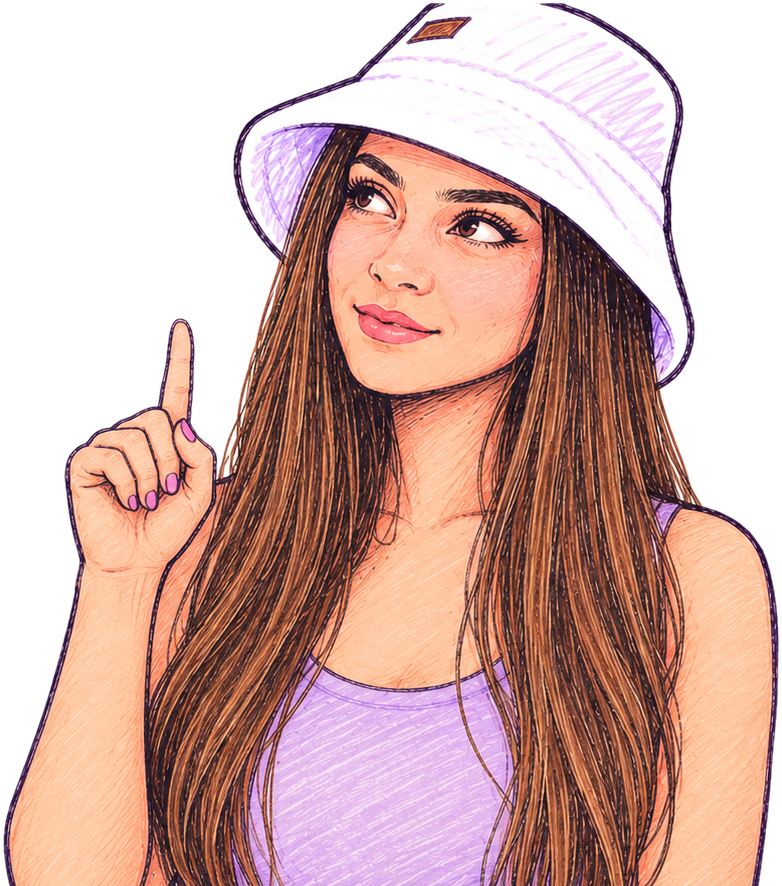
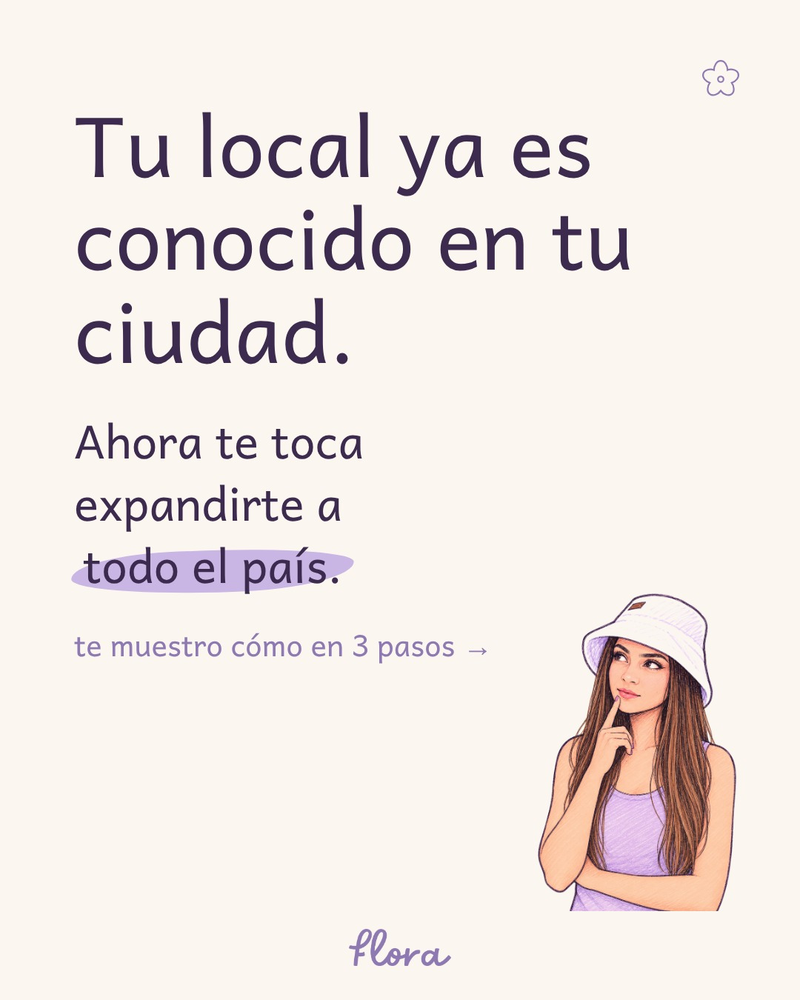
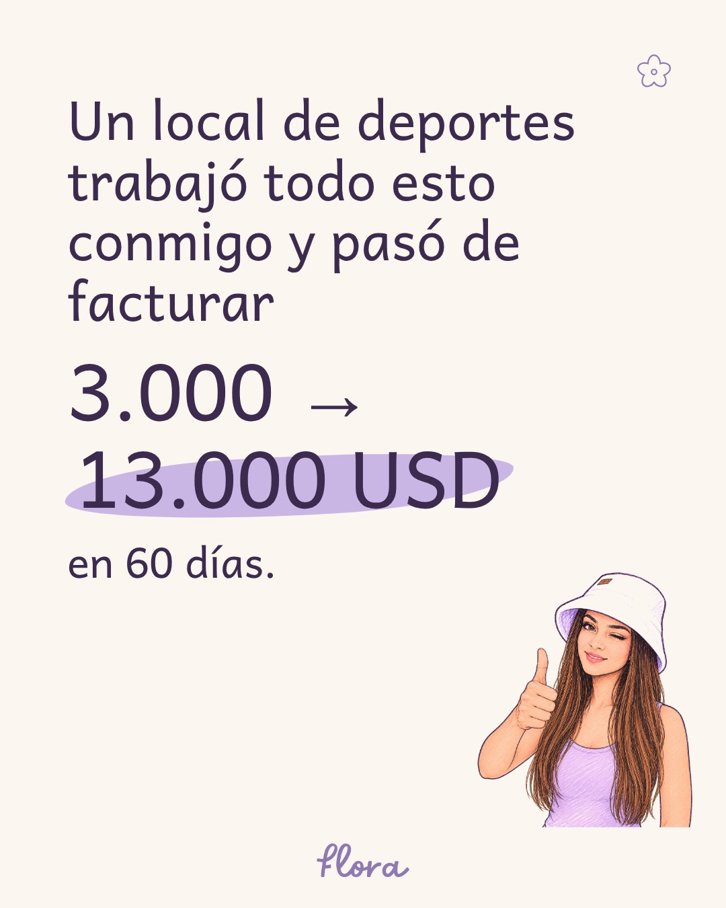

MARKETING
Manual de marca
Del local a todo el país 🌷
MARKETING
Del local a todo el país 🌷
Flora Marketing es la marca de Flor (Florencia Wilhjelm), estratega de crecimiento online para negocios con trayectoria.
Ayudo a negocios físicos con años en su rubro (ropa y calzado, bazar y deco, mueblerías) a vender también online, en todo el país, con estrategia, tienda, publicidad y contenido.
Servicio principal: el Método Flora, del local a todo el país en 90 días.
Ubicación: La Plata y CABA (grabaciones presenciales). Online para todo el país.
"Tu local ya es conocido en tu ciudad. Ahora te toca expandirte a todo el país."
Lo más difícil, la confianza de tus clientes, ya lo tenés. Yo me ocupo de que te encuentren y te puedan comprar desde cualquier lugar.
Principal · lila sobre claro

Sobre lila · ciruela
Foto de perfil
Proporción: 70% crema/beige, 20% lila (pastel y profundo), 10% ciruela en textos.
El fondo siempre es beige o crema liso, sin renglones ni texturas. El lila pastel se usa como marcador detrás de las palabras clave, no como fondo de bloques grandes.
No usar negro puro, colores saturados ni degradés.
Títulos
Tu local ya es conocido
Andika Regular, en MAYÚSCULAS en la web. En las placas, título grande en minúscula normal.
Textos
Ahora te toca expandirte a todo el país.
Andika Regular. Negrita (Bold) solo para palabras puntuales.
Sweet Apricot (la letra del logo) es de uso personal: no usarla en piezas comerciales sin comprar la licencia.

Florcita de 5 pétalos,
solo línea, sin relleno


Dueños de negocios físicos con años de trayectoria (ropa y calzado, bazar y deco, mueblerías) que venden bien en su ciudad pero no online, o que lo hacen sin llegar a la facturación que quieren.
Sí
"Tu local ya funciona. Hagamos que venda en todo el país."
No
"Gestionamos tus campañas de Meta Ads para optimizar tu ROAS."
Llamados a la acción con palabra clave: "Escribime EXPANDIR por MD".
@floramarketing.ar · florwilhjelm.github.io · La Plata · CABA · Online a todo el país